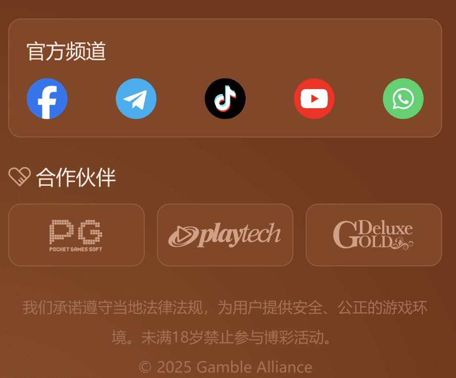
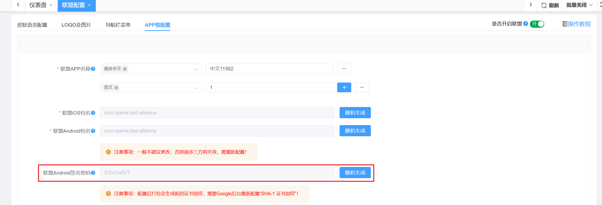
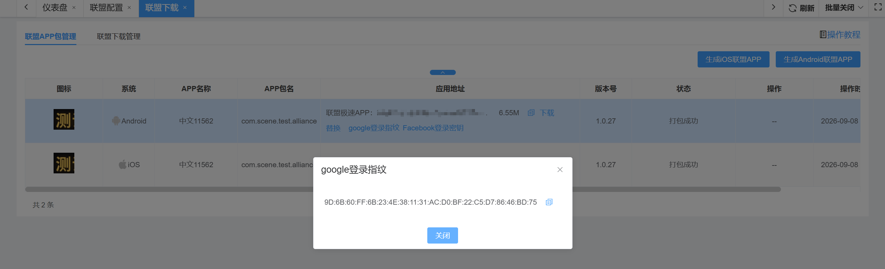
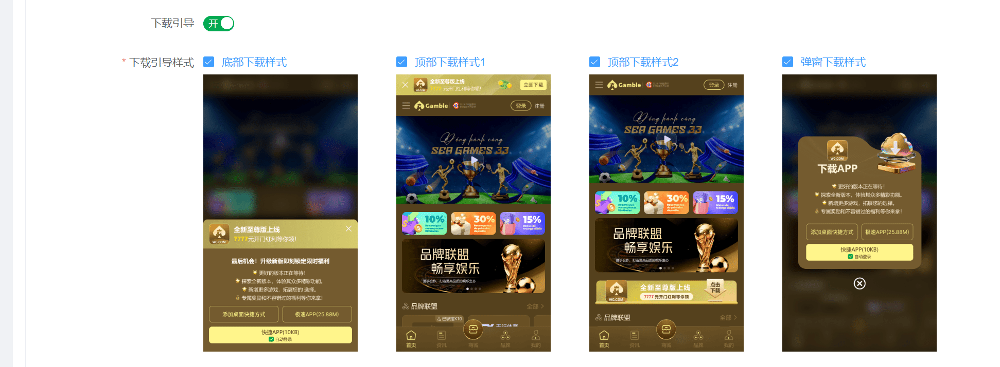
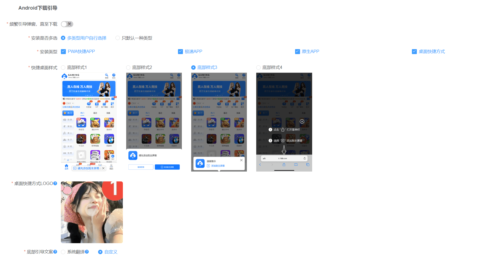

联盟仅限单币种站点使用，开启联盟前请先至运营-域名管理-联盟大厅配置1条有效域名，并将联盟语言、联盟皮肤配置好，点击右上角联盟开关进行开启
多品牌站点开关放在主站，主站和子站应用相同配置
开关配置后请至联盟下载配置最新的APP包，联盟大厅才能正确唤醒
未点击“翻译其他语言”时，系统将自动以当前编辑内容作为其他语言的兜底展示内容。
一、皮肤语言配置
1、联盟语言：支持和saas大厅一样的语种展示，勾选后对应展示，需设置默认语言
语言匹配模式：支持系统默认和智能匹配
2、联盟皮肤：配置客户端颜色、背景及底纹样式
二、LOGO及图片
1、联盟logo配置模块
（1）联盟名称：配置后关于联盟等页面会展示联盟名称，最多输入30个字符
（2）联盟logo：根据语言配置，上传后右边可展示预览
（3）点击logo跳转：可选点击首页跳转和自定义，选择自定义时请输入对应链接
（4）二级页面顶部是否展示Logo：默认隐藏，支持选择展示，展示后在二级页面顶部左侧展示logo
（5）网页标题：支持按照语言配置，最多输入100个字符
（6）网页logo：仅支持.ICO格式，且文件名为favicon.ico，不超过1MB,尺寸32px*32px，支持将.png后缀改为.ico后，直接上传
2、官方频道和社区
（1）根据提示配置图标、名称、链接地址
（2）名称最多输入100个字符，链接地址最多输入300个字符
3、页脚内容
（1）是否展示官方频道，默认展示，支持关闭
（2）页脚内容：文本框，支持表情输入，支持多语言编辑
4、 全局加载Loading动画
（1）有logo图片、艺术字体、PNG透明图（代码动画）、纯代码动画（极简）
（2）根据样式不同展示不同的配置
（3）底纹样式：支持系统底纹和皮肤默认
5、地区限制背景色
（1）按照提示选择背景色及配置限制内容

三、导航栏菜单
1、侧边栏样式：默认样式1，可选择样式2
2、侧边栏入口：支持对应功能的开关和排序
3、底部导航栏：点击可修改底部导航栏功能展示
四、APP包配置
修改密码可以生成新的签名，为空的时候使用默认的签名密码与指纹
配置后打包会生成新的证书指纹，需要google后台重新配置 SHA-1证书指纹

联盟下载 -联盟APP包管理-安卓-证书指纹 查看当前的证书指纹

设置android 签名密码 会影响谷歌快捷登录 ，只需要把打包成功重新生成的证书指纹，去谷歌开发者平台更换成最新的证书指纹 谷歌快捷登录其他配置不需要更改 只换SHA-1证书指纹

设置android 签名密码 ，异常问题解决方案
1、修改apk签名后，站点打包使用的签名就和其他站点不同，以免默认签名被标记，安装时提示不安全
2、修改apk签名也有副作用，修改后，三方登录的配置需要修改（sha-1证书指纹）
3、apk签名可以默认，不是必须要改，只建议安装有报毒的apk修改
4、apk签名修改后，新打的站点包、渠道包都会使用新签名，老包也能正常使用
5、清空apk签名，则使用默认签名 6、修改apk签名后，只针对新打的包生效，老包还是老签名
特别说明：渠道管理不受全局配置影响
引导下载：区分Android、iOS、PC的下载配置，可分别对这3种设备配置不同的APP下载类型
（1）引导下载：开关控制前台页面是否展示引导下载
（2）下载引导样式：控制Android、IOS、PC的顶部下载样式

注：频繁引导弹窗，直至下载：开启后每次返回大厅都将弹出下载引导
